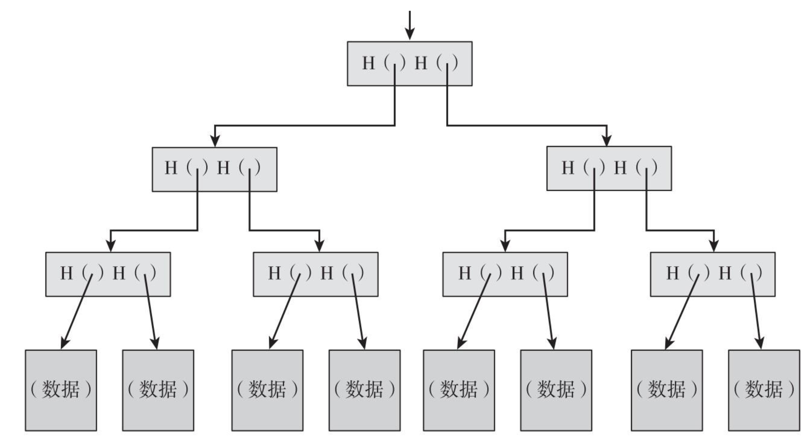

区块链基础概念--加密货币
区块链基础概念–加密货币
基于《区块链-技术驱动金融》一书
看到一个为什么会出现“挖矿”的概述：
要想创造一种自由浮动并且具有真实价值的虚拟货币，必须要设计出某种具有稀缺性的东西。其实，正是因为黄金和钻石的稀缺性，它们才会成为货币的储备。在虚拟世界，你可以这样设计你的系统，即虚拟货币只有在需要花一段时间解决了一定的数学计算（或“谜题”）之后方可生成，这样就保证了稀缺性。比特币体系中的“挖矿”就是这样的
密码学hash函数
总体需要满足的三个特性是：
- 输入长度不限
- 输出长度固定
- 有效时间计算，即对n长字符串，hash函数计算的复杂度为O(n)
而要使加密的hash函数足够安全，则有需要满足以下要求：
碰撞阻力
即无法找到x,y,其中x≠y,但H(x)=H(y)。注意的无法找到，并不意味着不存在，有鸽巢原理易得。还比如生日悖论，对于完全随机的个体，只需23个人，则至少有1/2的概率会出现生日在同一天的情况。
“我们实践中依赖的加密的哈希函数仅仅是人们经过不懈努力之后暂未成功找到碰撞的函数”
应用：信息摘要 message digest
隐秘性
在《密码学》中应该叫做”原像稳固性”，通俗的解释为知道y值很难推出x。
应用：数字签名，用到以上两个特性
谜题友好
这个之前没有听说过，浅显地说就是对于一个问题，没有比在其庞大的解空间中随机搜索解更好的解决策略。
正规定义：如果对于任意n位输出值y，假定k选自高阶最小熵分布，如果无法找到一个可行的方法，在比2n小很多时间内找到x，保证H(k‖x)=y成立，那么我们称哈希函数H为谜题友好。
比特币体系采用的安全hash函数sha-256, 通过MD（Merkle-Damgard）变换将任意长度输入转化为固定长度的输出。具体操作如下图：
输入为m位，输出位n位，其中m＞n，则分块，每个块的长度位m-n，在下个输入中块需要加上之前的输出进行一个迭代结构即长度为(m-n+n), 依然为m位, 注意初始向量需要选取。
hash指针
哈希指针是一个不但可以指向数据存储的位置，还可以明晰某个时间戳下该数据的哈希值的指针, 即用于验证是否被篡改。
区块链简化定义：
通过hash指针构建的链表。
我们锁定头部指针，使其不能被攻击者篡改，这样即使攻击者一直修改hash指针使其一致，但会在头部卡住。仅通过记住一个哈希指针，我们就基本记住了整个链表的防篡改哈希值。
创世区块（genesis block）：链表头部的hash指针
Merkle Tree
使用hash指针的二叉树, 注意区别：

数据块由父节点的hash指针指向，指向父节点的指针存储在上一层的父节点中，依次类推直至到达最高层即根节点。
由上可知，我们只要知道最上层的hash指针就能遍历到所有位置。
隶属性证明：即该数据块到根节点的路径，log(n)的复杂度
非隶属性证明: 被验证块前后的区块路径是否在该树上连续
数字签名
(sk, pk) = GernerateKeys(keysize), sk为私钥，pk为公钥, 用私钥进行签名，公钥进行认证。eg: RSA签名，基于大素数分解难题。
verify(pk, M, sign(sk, M)) == true
签名具有不可伪造性
我的理解是攻击者是知道公钥的，同时它可以看到被攻击者大量对其它信息的签名，从而是否能够推出在刚才所有信息范围之类之外的另一个信息的签名。
其中Gerneratekeys和Verify都用到随机算法。
而且我们一般采用的是先摘要，再对定长输出签名。
去中心化身份管理
- 地址：公钥的hash值
在比特币系统中，你不需要明确地注册或揭露你的真实身份，但是你的行为模式本身可能是可识别的。
即我们可能会通过你创建的身份作出的一系列声明来推断你的真实身份。
加密货币
高飞币：通过签署声明创建新币，或将币转为X(X为公钥)，可以由hash指针回溯到创建者。会出现”双重支付“问题。
财奴币：通过区块链建立记录交易历史记录的仅增账目来防止双重支付，财奴数字签名针对最后也就是最新的hash指针，约束前面所有的数据，从而可以轻易发现篡改或者删除的记录。但是不满足”去中心化”思想。